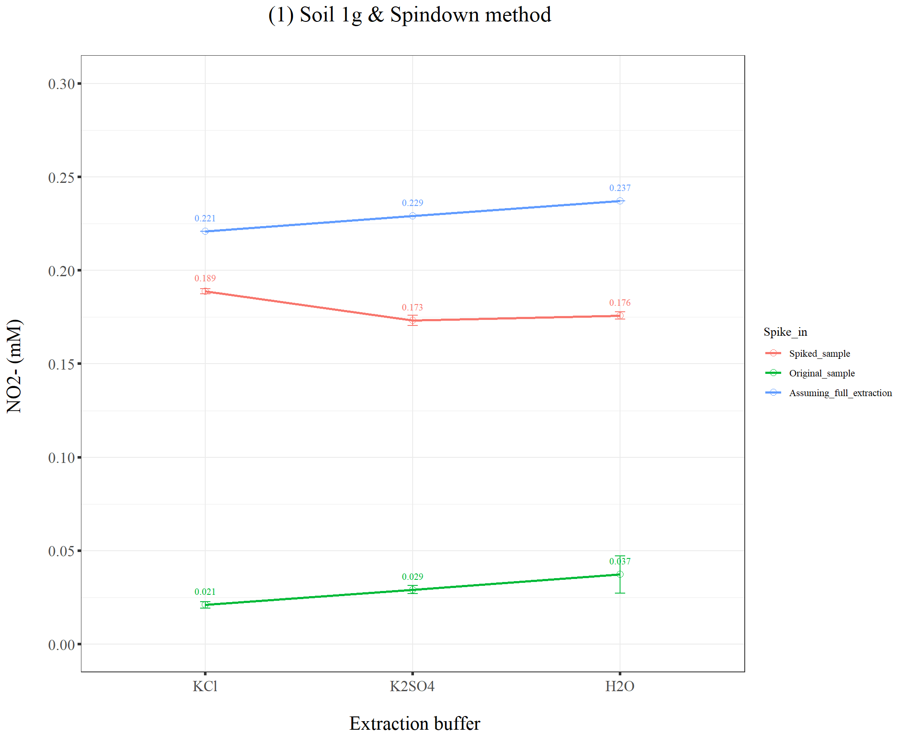
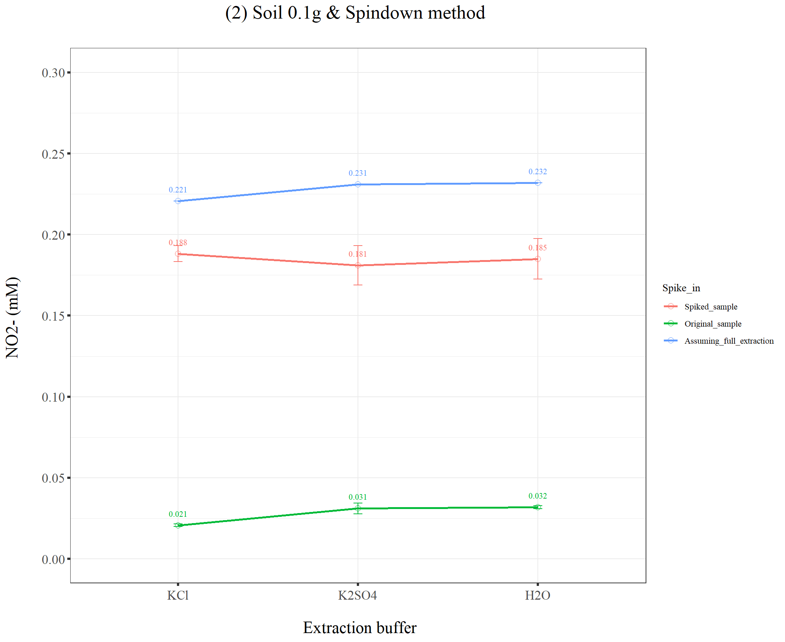
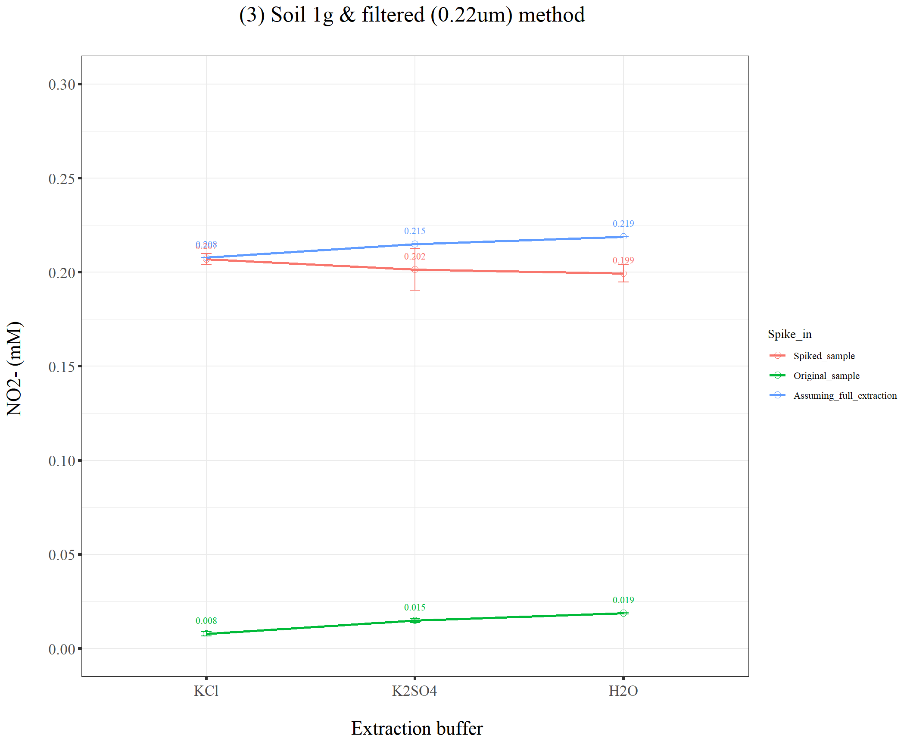
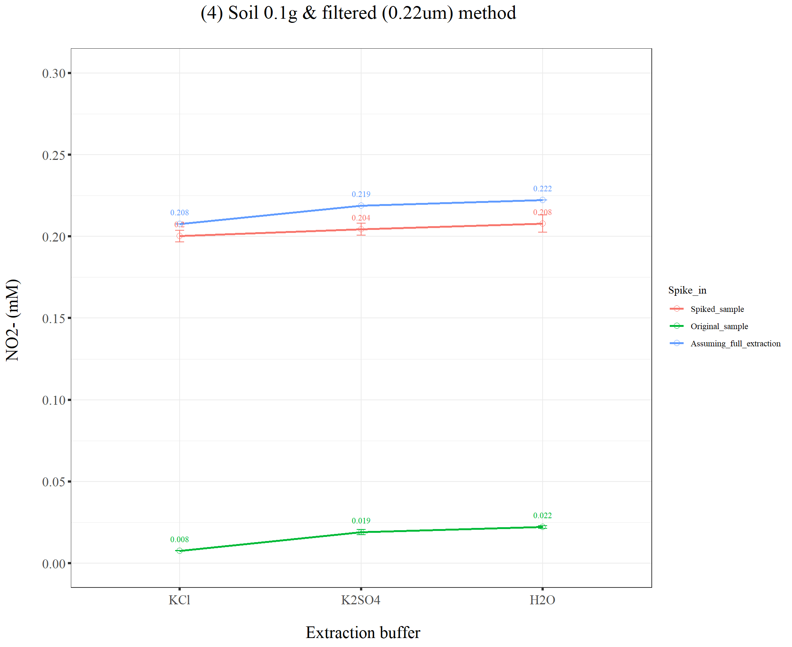

Last updated: 2021-09-24
Checks: 7 0
Knit directory: Denit_visualization_R/
This reproducible R Markdown analysis was created with workflowr (version 1.6.2). The Checks tab describes the reproducibility checks that were applied when the results were created. The Past versions tab lists the development history.
Great! Since the R Markdown file has been committed to the Git repository, you know the exact version of the code that produced these results.
Great job! The global environment was empty. Objects defined in the global environment can affect the analysis in your R Markdown file in unknown ways. For reproduciblity it’s best to always run the code in an empty environment.
The command set.seed(20210924) was run prior to running the code in the R Markdown file. Setting a seed ensures that any results that rely on randomness, e.g. subsampling or permutations, are reproducible.
Great job! Recording the operating system, R version, and package versions is critical for reproducibility.
Nice! There were no cached chunks for this analysis, so you can be confident that you successfully produced the results during this run.
Great job! Using relative paths to the files within your workflowr project makes it easier to run your code on other machines.
Great! You are using Git for version control. Tracking code development and connecting the code version to the results is critical for reproducibility.
The results in this page were generated with repository version 715b4ad. See the Past versions tab to see a history of the changes made to the R Markdown and HTML files.
Note that you need to be careful to ensure that all relevant files for the analysis have been committed to Git prior to generating the results (you can use wflow_publish or wflow_git_commit). workflowr only checks the R Markdown file, but you know if there are other scripts or data files that it depends on. Below is the status of the Git repository when the results were generated:
Ignored files:
Ignored: .Rhistory
Ignored: .Rproj.user/
Untracked files:
Untracked: Rplot.pdf
Untracked: Soil0.1g_filter.pdf
Untracked: Soil0.1g_spindown_7_10.pdf
Untracked: Soil1g_filter_7_10.pdf
Untracked: Soil1g_spindown_7_10.pdf
Untracked: Soil1g_whatman_7_10.pdf
Untracked: data/210922_Griess_sample_plate1-investigating.xlsx
Untracked: data/210922_Griess_sample_plate1.xlsx
Untracked: data/dry_weight_curve(9.5.21).xlsx
Untracked: data/pH_data(9.14.21).xlsx
Untracked: df_NO2NO3.xlsx
Unstaged changes:
Modified: analysis/index.Rmd
Note that any generated files, e.g. HTML, png, CSS, etc., are not included in this status report because it is ok for generated content to have uncommitted changes.
These are the previous versions of the repository in which changes were made to the R Markdown (analysis/Soil_extraction_method_Griess.Rmd) and HTML (docs/Soil_extraction_method_Griess.html) files. If you’ve configured a remote Git repository (see ?wflow_git_remote), click on the hyperlinks in the table below to view the files as they were in that past version.
| File | Version | Author | Date | Message |
|---|---|---|---|---|
| Rmd | 715b4ad | KiseokUchicago | 2021-09-24 | wflow_publish(“analysis/Soil_extraction_method_Griess.Rmd”) |
| html | 39bfa16 | KiseokUchicago | 2021-09-24 | Build site. |
| Rmd | 61dee2a | KiseokUchicago | 2021-09-24 | wflow_publish(“analysis/Soil_extraction_method_Griess.Rmd”) |
| html | 390659b | KiseokUchicago | 2021-09-24 | Build site. |
| Rmd | 8c7b936 | KiseokUchicago | 2021-09-24 | wflow_publish("analysis/*.Rmd") |
| html | d6ecb1e | KiseokUchicago | 2021-09-24 | Build site. |
| Rmd | c96c24b | KiseokUchicago | 2021-09-24 | wflow_publish("analysis/*.Rmd") |
Researcher: Kiseok Lee
Lab: Seppe Kuehn
# libraries
library(dplyr)
library(ggplot2)
library(RColorBrewer)
library(vegan)
library(tidyverse)Error: package or namespace load failed for 'tidyverse' in loadNamespace(i, c(lib.loc, .libPaths()), versionCheck = vI[[i]]):
namespace 'ellipsis' 0.3.1 is already loaded, but >= 0.3.2 is requiredlibrary(magrittr)
library(readxl)
library(reshape2)
library(gtools)
library(devtools)
library(openxlsx)
library(ape)
library(stringr)
## theme for ggplot
mytheme <- theme_bw() +
theme(text = element_text(family="serif")) +
theme(plot.title = element_text(size = 19,hjust = 0.5, family="serif")) +
theme(axis.title.x = element_text(size = 17,hjust = 0.5, family="serif")) +
theme(axis.title.y = element_text(size = 17,hjust = 0.5, family="serif")) +
theme(axis.text.x = element_text(hjust = 0.5, vjust=0.3,size=13, family="serif"))+
theme(axis.text.y = element_text(size=10, family="serif"))+
theme(panel.grid.major = element_blank()) +
theme(panel.grid.minor = element_blank(),panel.background=element_blank(),panel.border=element_blank(),plot.background=element_blank()) +
theme(axis.ticks = element_line(size = 1.1))
mytheme_2d <- theme_bw() +
theme(text = element_text(family="serif")) +
theme(plot.title = element_text(size = 19,hjust = 0.5, family="serif")) +
theme(axis.title.x = element_text(size = 17,hjust = 0.5, family="serif")) +
theme(axis.title.y = element_text(size = 17,hjust = 0.5, family="serif")) +
theme(axis.text.x = element_text(hjust = 0.5, vjust=0.3,size=13, family="serif"))+
theme(axis.text.y = element_text(size=13, family="serif"))+
# theme(panel.grid.major = element_blank()) +
# theme(panel.grid.minor = element_blank(),panel.background=element_blank(),plot.background=element_blank()) +
theme(axis.ticks = element_line(size = 1.1))
# color collection
my_color_collection <- c(
"#CBD588", "#5F7FC7", "orange", "#AD6F3B", "#673770",
"#D14285", "#652926", "#C84248", "#8569D5", "#5E738F",
"#D1A33D", "#8A7C64", "#599861","#616163", "#FFCDB2",
"#6D9F71", "#242F40",
"#CCA43B", "#F92A82", "#ED7B84", "#7EB77F",
"#DEC4A1", "#E5D1D0", '#0E8482', '#C9DAEA', '#337357',
'#95C623', '#E55812', '#04471C', '#F2D7EE', '#D3BCC0',
'#A5668B', '#69306D', '#0E103D', '#1A535C', '#4ECDC4',
'#F7FFF7', '#FF6B6B', '#FFE66D', '#6699CC', '#FFF275',
'#FF8C42', '#FF3C38', '#A23E48', '#000000', '#CF5C36',
'#EEE5E9', '#7C7C7C', '#EFC88B', '#2E5266', '#6E8898',
'#9FB1BC', '#D3D0CB', '#E2C044', '#5BC0EB', '#FDE74C',
'#9BC53D', '#E55934', '#FA7921', "#CD9BCD", "#508578", "#DA5724")
# for git push, use this instead of using wflow_git_push()
# git push -u origin master (in the Git app / in the working directory)When I did the experiment, B05 and B06 was switched. D05, D06 also switched. F05, F06 switched.
# import file
df_extract <- openxlsx::read.xlsx("data/210922_Griess_sample_plate1.xlsx")
class(df_extract)[1] "data.frame"head(df_extract) Well SampleID Sample Buffer Soil_weight Method
1 A01 KCl_1g_Spin_a_1 KCl_1g_Spin_a KCl 1 Spindown
2 A02 KCl_1g_Spin_b_1 KCl_1g_Spin_b KCl 1 Spindown
3 A03 K2SO4_1g_Spin_a_1 K2SO4_1g_Spin_a K2SO4 1 Spindown
4 A04 K2SO4_1g_Spin_b_1 K2SO4_1g_Spin_b K2SO4 1 Spindown
5 A05 H2O_1g_Spin_a_1 H2O_1g_Spin_a H2O 1 Spindown
6 A06 H2O_1g_Spin_b_1 H2O_1g_Spin_b H2O 1 Spindown
Spike_in NO2_OD540 NO2NO3_OD540 NO2_mM NO2NO3_mM
1 Original_sample 0.08610 0.16430 0.04397089 0.1477700
2 Spiked_sample 0.43815 0.59715 0.21573012 0.5412232
3 Original_sample 0.10460 0.17260 0.05287393 0.1551473
4 Spiked_sample 0.39900 0.54640 0.19637972 0.4941345
5 Original_sample 0.10020 0.14310 0.05075525 0.1289551
6 Spiked_sample 0.40780 0.52120 0.20072364 0.4708508colnames(df_extract) [1] "Well" "SampleID" "Sample" "Buffer" "Soil_weight"
[6] "Method" "Spike_in" "NO2_OD540" "NO2NO3_OD540" "NO2_mM"
[11] "NO2NO3_mM" # remove NA
dim(df_extract)[1] 84 11df_extract <- na.omit(df_extract)
dim(df_extract)[1] 84 11# Check
df_extract %>% filter(Well =="B06") Well SampleID Sample Buffer Soil_weight Method
1 B06 H2O_0.1g_Spin_b_1 H2O_0.1g_Spin_b H2O 0.1 Spindown
Spike_in NO2_OD540 NO2NO3_OD540 NO2_mM NO2NO3_mM
1 Spiked_sample 0.3987 0.5315 0.1962317 0.4803598df_extract %>% filter(Well =="D05") Well SampleID Sample Buffer Soil_weight Method
1 D05 H2O_0.1g_Spin_a_2 H2O_0.1g_Spin_a H2O 0.1 Spindown
Spike_in NO2_OD540 NO2NO3_OD540 NO2_mM NO2NO3_mM
1 Original_sample 0.11235 0.181 0.05660752 0.1626199df_extract %>% filter(Well =="F05") Well SampleID Sample Buffer Soil_weight Method
1 F05 H2O_0.1g_Spin_a_3 H2O_0.1g_Spin_a H2O 0.1 Spindown
Spike_in NO2_OD540 NO2NO3_OD540 NO2_mM NO2NO3_mM
1 Original_sample 0.11515 0.18815 0.057957 0.1689855# average and standard deviation
df_NO2NO3 <- df_extract %>% group_by(Sample, Buffer, Soil_weight, Method, Spike_in) %>% summarise(Ave_NO2_mM = mean(NO2_mM), Std_NO2_mM = sd(NO2_mM), Ave_NO2NO3_mM = mean(NO2NO3_mM), Std_NO2NO3_mM = sd(NO2NO3_mM), Ave_NO3_mM = mean(NO2NO3_mM - NO2_mM), Std_NO3_mM = sd(NO2NO3_mM - NO2_mM)) %>% ungroup()
# NO3_mM = NO2NO3_mM - NO2_mM
# Factor in orders
df_NO2NO3$Buffer <- factor(df_NO2NO3$Buffer, levels = c("KCl","K2SO4","H2O"))
# Put is values for known spike_ins
df_spike_in <- df_NO2NO3 %>% filter(Spike_in == "Original_sample")
df_spike_in# A tibble: 15 x 11
Sample Buffer Soil_weight Method Spike_in Ave_NO2_mM Std_NO2_mM Ave_NO2NO3_mM
<chr> <fct> <dbl> <chr> <chr> <dbl> <dbl> <dbl>
1 H2O_0~ H2O 0.1 Filter Origina~ 0.0472 0.000834 0.172
2 H2O_0~ H2O 0.1 Spind~ Origina~ 0.0568 0.00101 0.165
3 H2O_1~ H2O 1 Filter Origina~ 0.0437 0.000412 0.161
4 H2O_1~ H2O 1 Spind~ Origina~ 0.0623 0.0101 0.147
5 H2O_1~ H2O 1 Whatm~ Origina~ 0.0548 0.000477 0.160
6 K2SO4~ K2SO4 0.1 Filter Origina~ 0.0439 0.00162 0.168
7 K2SO4~ K2SO4 0.1 Spind~ Origina~ 0.0561 0.00324 0.149
8 K2SO4~ K2SO4 1 Filter Origina~ 0.0398 0.00105 0.163
9 K2SO4~ K2SO4 1 Spind~ Origina~ 0.0542 0.00221 0.157
10 K2SO4~ K2SO4 1 Whatm~ Origina~ 0.0383 0.000408 0.170
11 KCl_0~ KCl 0.1 Filter Origina~ 0.0326 0.000163 0.161
12 KCl_0~ KCl 0.1 Spind~ Origina~ 0.0457 0.000791 0.161
13 KCl_1~ KCl 1 Filter Origina~ 0.0328 0.00114 0.157
14 KCl_1~ KCl 1 Spind~ Origina~ 0.0460 0.00174 0.147
15 KCl_1~ KCl 1 Whatm~ Origina~ 0.0340 0.000543 0.167
# ... with 3 more variables: Std_NO2NO3_mM <dbl>, Ave_NO3_mM <dbl>,
# Std_NO3_mM <dbl># increase the concentration as the spike in & make standard deviation to 0
df_spike_in2 <- df_spike_in %>% mutate(Ave_NO2_mM = Ave_NO2_mM + 0.2, Ave_NO2NO3_mM = Ave_NO2NO3_mM + 0.4, Ave_NO3_mM = Ave_NO3_mM + 0.2, Std_NO2_mM = 0, Std_NO2NO3_mM = 0, Std_NO3_mM = 0)
# change Sample name
df_spike_in2$Sample <- str_replace(df_spike_in2$Sample,"$","_spike_in")
# label in Spike_in column
df_spike_in2$Spike_in <- "Assuming_full_extraction"
df_spike_in2$Spike_in [1] "Assuming_full_extraction" "Assuming_full_extraction"
[3] "Assuming_full_extraction" "Assuming_full_extraction"
[5] "Assuming_full_extraction" "Assuming_full_extraction"
[7] "Assuming_full_extraction" "Assuming_full_extraction"
[9] "Assuming_full_extraction" "Assuming_full_extraction"
[11] "Assuming_full_extraction" "Assuming_full_extraction"
[13] "Assuming_full_extraction" "Assuming_full_extraction"
[15] "Assuming_full_extraction"dim(df_spike_in2)[1] 15 11# Bind this df to the original dataframe df_NO2NO3
dim(df_NO2NO3)[1] 30 11df_NO2NO3 <- rbind(df_NO2NO3, df_spike_in2)
dim(df_NO2NO3)[1] 45 11tail(df_NO2NO3)# A tibble: 6 x 11
Sample Buffer Soil_weight Method Spike_in Ave_NO2_mM Std_NO2_mM Ave_NO2NO3_mM
<chr> <fct> <dbl> <chr> <chr> <dbl> <dbl> <dbl>
1 K2SO4_~ K2SO4 1 Whatm~ Assumin~ 0.238 0 0.570
2 KCl_0.~ KCl 0.1 Filter Assumin~ 0.233 0 0.561
3 KCl_0.~ KCl 0.1 Spind~ Assumin~ 0.246 0 0.561
4 KCl_1g~ KCl 1 Filter Assumin~ 0.233 0 0.557
5 KCl_1g~ KCl 1 Spind~ Assumin~ 0.246 0 0.547
6 KCl_1g~ KCl 1 Whatm~ Assumin~ 0.234 0 0.567
# ... with 3 more variables: Std_NO2NO3_mM <dbl>, Ave_NO3_mM <dbl>,
# Std_NO3_mM <dbl>df_NO2NO3$Spike_in [1] "Original_sample" "Spiked_sample"
[3] "Original_sample" "Spiked_sample"
[5] "Original_sample" "Spiked_sample"
[7] "Original_sample" "Spiked_sample"
[9] "Original_sample" "Spiked_sample"
[11] "Original_sample" "Spiked_sample"
[13] "Original_sample" "Spiked_sample"
[15] "Original_sample" "Spiked_sample"
[17] "Original_sample" "Spiked_sample"
[19] "Original_sample" "Spiked_sample"
[21] "Original_sample" "Spiked_sample"
[23] "Original_sample" "Spiked_sample"
[25] "Original_sample" "Spiked_sample"
[27] "Original_sample" "Spiked_sample"
[29] "Original_sample" "Spiked_sample"
[31] "Assuming_full_extraction" "Assuming_full_extraction"
[33] "Assuming_full_extraction" "Assuming_full_extraction"
[35] "Assuming_full_extraction" "Assuming_full_extraction"
[37] "Assuming_full_extraction" "Assuming_full_extraction"
[39] "Assuming_full_extraction" "Assuming_full_extraction"
[41] "Assuming_full_extraction" "Assuming_full_extraction"
[43] "Assuming_full_extraction" "Assuming_full_extraction"
[45] "Assuming_full_extraction"# Factor in orders
df_NO2NO3$Spike_in <- factor(df_NO2NO3$Spike_in, levels = c("Spiked_sample","Original_sample", "Assuming_full_extraction"))
df_NO2NO3$Spike_in [1] Original_sample Spiked_sample Original_sample
[4] Spiked_sample Original_sample Spiked_sample
[7] Original_sample Spiked_sample Original_sample
[10] Spiked_sample Original_sample Spiked_sample
[13] Original_sample Spiked_sample Original_sample
[16] Spiked_sample Original_sample Spiked_sample
[19] Original_sample Spiked_sample Original_sample
[22] Spiked_sample Original_sample Spiked_sample
[25] Original_sample Spiked_sample Original_sample
[28] Spiked_sample Original_sample Spiked_sample
[31] Assuming_full_extraction Assuming_full_extraction Assuming_full_extraction
[34] Assuming_full_extraction Assuming_full_extraction Assuming_full_extraction
[37] Assuming_full_extraction Assuming_full_extraction Assuming_full_extraction
[40] Assuming_full_extraction Assuming_full_extraction Assuming_full_extraction
[43] Assuming_full_extraction Assuming_full_extraction Assuming_full_extraction
Levels: Spiked_sample Original_sample Assuming_full_extractionwrite.xlsx(df_NO2NO3,"df_NO2NO3.xlsx")4 graphs: (1) Soil 1g & Spindown method (2) Soil 0.1g & Spindown method (3) Soil 1g & filtered(0.22um) method (4) Soil 0.1g & filtered(0.22um) method (5) Soil 1g & Whatman no.42 paper filtered
# First, let's see extraction efficiency soil NO2
# (1) 1g & Spindown method
colnames(df_NO2NO3) [1] "Sample" "Buffer" "Soil_weight" "Method"
[5] "Spike_in" "Ave_NO2_mM" "Std_NO2_mM" "Ave_NO2NO3_mM"
[9] "Std_NO2NO3_mM" "Ave_NO3_mM" "Std_NO3_mM" df_spin1 <- df_NO2NO3 %>% filter(Method == "Spindown", Soil_weight ==1)
dim(df_spin1)[1] 9 11df_spin1$Spike_in[1] Original_sample Spiked_sample Original_sample
[4] Spiked_sample Original_sample Spiked_sample
[7] Assuming_full_extraction Assuming_full_extraction Assuming_full_extraction
Levels: Spiked_sample Original_sample Assuming_full_extractiondf_spin1 %>% filter(Spike_in == "Assuming_full_extraction")# A tibble: 3 x 11
Sample Buffer Soil_weight Method Spike_in Ave_NO2_mM Std_NO2_mM Ave_NO2NO3_mM
<chr> <fct> <dbl> <chr> <fct> <dbl> <dbl> <dbl>
1 H2O_1g~ H2O 1 Spind~ Assumin~ 0.262 0 0.547
2 K2SO4_~ K2SO4 1 Spind~ Assumin~ 0.254 0 0.557
3 KCl_1g~ KCl 1 Spind~ Assumin~ 0.246 0 0.547
# ... with 3 more variables: Std_NO2NO3_mM <dbl>, Ave_NO3_mM <dbl>,
# Std_NO3_mM <dbl>df_spin1 %>% filter(Spike_in == "Spiked_sample")# A tibble: 3 x 11
Sample Buffer Soil_weight Method Spike_in Ave_NO2_mM Std_NO2_mM Ave_NO2NO3_mM
<chr> <fct> <dbl> <chr> <fct> <dbl> <dbl> <dbl>
1 H2O_1g~ H2O 1 Spind~ Spiked_~ 0.201 0.00198 0.484
2 K2SO4_~ K2SO4 1 Spind~ Spiked_~ 0.199 0.00278 0.489
3 KCl_1g~ KCl 1 Spind~ Spiked_~ 0.214 0.00142 0.539
# ... with 3 more variables: Std_NO2NO3_mM <dbl>, Ave_NO3_mM <dbl>,
# Std_NO3_mM <dbl>ggplot(df_spin1, aes(x=Buffer, y=Ave_NO2_mM, color=Spike_in, group=Spike_in)) +
geom_point(size=2.5, shape=21) +
geom_line(size=1)+
geom_errorbar(aes(ymin=Ave_NO2_mM - Std_NO2_mM, ymax=Ave_NO2_mM + Std_NO2_mM), width=.05)+
scale_fill_brewer(palette='Set2') +
ylab("NO2- (mM) \n") +
xlab("\n Extraction buffer") +
scale_y_continuous(breaks = seq(0,0.3,0.05), limits=c(0, 0.3))+
ggtitle("(1) Soil 1g & Spindown method \n") +
# label
geom_text(aes(label = round(Ave_NO2_mM,3)), size = 3, vjust = -1.5, family="serif", show.legend = FALSE)+
mytheme_2d
# (2) Soil 0.1g & Spindown method
colnames(df_NO2NO3) [1] "Sample" "Buffer" "Soil_weight" "Method"
[5] "Spike_in" "Ave_NO2_mM" "Std_NO2_mM" "Ave_NO2NO3_mM"
[9] "Std_NO2NO3_mM" "Ave_NO3_mM" "Std_NO3_mM" df_spin0.1 <- df_NO2NO3 %>% filter(Method == "Spindown", Soil_weight ==0.1)
dim(df_spin0.1)[1] 9 11head(df_spin0.1)# A tibble: 6 x 11
Sample Buffer Soil_weight Method Spike_in Ave_NO2_mM Std_NO2_mM Ave_NO2NO3_mM
<chr> <fct> <dbl> <chr> <fct> <dbl> <dbl> <dbl>
1 H2O_0.~ H2O 0.1 Spind~ Origina~ 0.0568 0.00101 0.165
2 H2O_0.~ H2O 0.1 Spind~ Spiked_~ 0.211 0.0125 0.503
3 K2SO4_~ K2SO4 0.1 Spind~ Origina~ 0.0561 0.00324 0.149
4 K2SO4_~ K2SO4 0.1 Spind~ Spiked_~ 0.207 0.0122 0.506
5 KCl_0.~ KCl 0.1 Spind~ Origina~ 0.0457 0.000791 0.161
6 KCl_0.~ KCl 0.1 Spind~ Spiked_~ 0.214 0.00497 0.529
# ... with 3 more variables: Std_NO2NO3_mM <dbl>, Ave_NO3_mM <dbl>,
# Std_NO3_mM <dbl>df_spin0.1$Spike_in[1] Original_sample Spiked_sample Original_sample
[4] Spiked_sample Original_sample Spiked_sample
[7] Assuming_full_extraction Assuming_full_extraction Assuming_full_extraction
Levels: Spiked_sample Original_sample Assuming_full_extractiondf_spin0.1 %>% filter(Spike_in == "Assuming_full_extraction")# A tibble: 3 x 11
Sample Buffer Soil_weight Method Spike_in Ave_NO2_mM Std_NO2_mM Ave_NO2NO3_mM
<chr> <fct> <dbl> <chr> <fct> <dbl> <dbl> <dbl>
1 H2O_0.~ H2O 0.1 Spind~ Assumin~ 0.257 0 0.565
2 K2SO4_~ K2SO4 0.1 Spind~ Assumin~ 0.256 0 0.549
3 KCl_0.~ KCl 0.1 Spind~ Assumin~ 0.246 0 0.561
# ... with 3 more variables: Std_NO2NO3_mM <dbl>, Ave_NO3_mM <dbl>,
# Std_NO3_mM <dbl>df_spin0.1 %>% filter(Spike_in == "Spiked_sample")# A tibble: 3 x 11
Sample Buffer Soil_weight Method Spike_in Ave_NO2_mM Std_NO2_mM Ave_NO2NO3_mM
<chr> <fct> <dbl> <chr> <fct> <dbl> <dbl> <dbl>
1 H2O_0.~ H2O 0.1 Spind~ Spiked_~ 0.211 0.0125 0.503
2 K2SO4_~ K2SO4 0.1 Spind~ Spiked_~ 0.207 0.0122 0.506
3 KCl_0.~ KCl 0.1 Spind~ Spiked_~ 0.214 0.00497 0.529
# ... with 3 more variables: Std_NO2NO3_mM <dbl>, Ave_NO3_mM <dbl>,
# Std_NO3_mM <dbl>ggplot(df_spin0.1, aes(x=Buffer, y=Ave_NO2_mM, color=Spike_in, group=Spike_in)) +
geom_point(size=2.5, shape=21) +
geom_line(size=1)+
geom_errorbar(aes(ymin=Ave_NO2_mM - Std_NO2_mM, ymax=Ave_NO2_mM + Std_NO2_mM), width=.05)+
scale_fill_brewer(palette='Set2') +
ylab("NO2- (mM) \n") +
xlab("\n Extraction buffer") +
scale_y_continuous(breaks = seq(0,0.3,0.05), limits=c(0, 0.3))+
ggtitle("(2) Soil 0.1g & Spindown method \n") +
# label
geom_text(aes(label = round(Ave_NO2_mM,3)), size = 3, vjust = -1.5, family="serif", show.legend = FALSE)+
mytheme_2d
# (3) Soil 1g & filtered(0.22um) method
colnames(df_NO2NO3) [1] "Sample" "Buffer" "Soil_weight" "Method"
[5] "Spike_in" "Ave_NO2_mM" "Std_NO2_mM" "Ave_NO2NO3_mM"
[9] "Std_NO2NO3_mM" "Ave_NO3_mM" "Std_NO3_mM" df_NO2NO3$Method %>% unique()[1] "Filter" "Spindown" "Whatman" df_filt1 <- df_NO2NO3 %>% filter(Method == "Filter", Soil_weight ==1)
dim(df_filt1)[1] 9 11head(df_filt1)# A tibble: 6 x 11
Sample Buffer Soil_weight Method Spike_in Ave_NO2_mM Std_NO2_mM Ave_NO2NO3_mM
<chr> <fct> <dbl> <chr> <fct> <dbl> <dbl> <dbl>
1 H2O_1g~ H2O 1 Filter Origina~ 0.0437 0.000412 0.161
2 H2O_1g~ H2O 1 Filter Spiked_~ 0.225 0.00466 0.535
3 K2SO4_~ K2SO4 1 Filter Origina~ 0.0398 0.00105 0.163
4 K2SO4_~ K2SO4 1 Filter Spiked_~ 0.227 0.0111 0.535
5 KCl_1g~ KCl 1 Filter Origina~ 0.0328 0.00114 0.157
6 KCl_1g~ KCl 1 Filter Spiked_~ 0.233 0.00288 0.550
# ... with 3 more variables: Std_NO2NO3_mM <dbl>, Ave_NO3_mM <dbl>,
# Std_NO3_mM <dbl>df_filt1$Spike_in[1] Original_sample Spiked_sample Original_sample
[4] Spiked_sample Original_sample Spiked_sample
[7] Assuming_full_extraction Assuming_full_extraction Assuming_full_extraction
Levels: Spiked_sample Original_sample Assuming_full_extractiondf_filt1 %>% filter(Spike_in == "Assuming_full_extraction")# A tibble: 3 x 11
Sample Buffer Soil_weight Method Spike_in Ave_NO2_mM Std_NO2_mM Ave_NO2NO3_mM
<chr> <fct> <dbl> <chr> <fct> <dbl> <dbl> <dbl>
1 H2O_1g~ H2O 1 Filter Assumin~ 0.244 0 0.561
2 K2SO4_~ K2SO4 1 Filter Assumin~ 0.240 0 0.563
3 KCl_1g~ KCl 1 Filter Assumin~ 0.233 0 0.557
# ... with 3 more variables: Std_NO2NO3_mM <dbl>, Ave_NO3_mM <dbl>,
# Std_NO3_mM <dbl>df_filt1 %>% filter(Spike_in == "Spiked_sample")# A tibble: 3 x 11
Sample Buffer Soil_weight Method Spike_in Ave_NO2_mM Std_NO2_mM Ave_NO2NO3_mM
<chr> <fct> <dbl> <chr> <fct> <dbl> <dbl> <dbl>
1 H2O_1g~ H2O 1 Filter Spiked_~ 0.225 0.00466 0.535
2 K2SO4_~ K2SO4 1 Filter Spiked_~ 0.227 0.0111 0.535
3 KCl_1g~ KCl 1 Filter Spiked_~ 0.233 0.00288 0.550
# ... with 3 more variables: Std_NO2NO3_mM <dbl>, Ave_NO3_mM <dbl>,
# Std_NO3_mM <dbl>ggplot(df_filt1, aes(x=Buffer, y=Ave_NO2_mM, color=Spike_in, group=Spike_in)) +
geom_point(size=2.5, shape=21) +
geom_line(size=1)+
geom_errorbar(aes(ymin=Ave_NO2_mM - Std_NO2_mM, ymax=Ave_NO2_mM + Std_NO2_mM), width=.05)+
scale_fill_brewer(palette='Set2') +
ylab("NO2- (mM) \n") +
xlab("\n Extraction buffer") +
scale_y_continuous(breaks = seq(0,0.3,0.05), limits=c(0, 0.3))+
ggtitle("(3) Soil 1g & filtered (0.22um) method \n") +
# label
geom_text(aes(label = round(Ave_NO2_mM,3)), size = 3, vjust = -1.5, family="serif", show.legend = FALSE)+
mytheme_2d
# (4) Soil 0.1g & filtered(0.22um) method
colnames(df_NO2NO3) [1] "Sample" "Buffer" "Soil_weight" "Method"
[5] "Spike_in" "Ave_NO2_mM" "Std_NO2_mM" "Ave_NO2NO3_mM"
[9] "Std_NO2NO3_mM" "Ave_NO3_mM" "Std_NO3_mM" df_NO2NO3$Method %>% unique()[1] "Filter" "Spindown" "Whatman" df_filt0.1 <- df_NO2NO3 %>% filter(Method == "Filter", Soil_weight ==0.1)
dim(df_filt0.1)[1] 9 11head(df_filt0.1)# A tibble: 6 x 11
Sample Buffer Soil_weight Method Spike_in Ave_NO2_mM Std_NO2_mM Ave_NO2NO3_mM
<chr> <fct> <dbl> <chr> <fct> <dbl> <dbl> <dbl>
1 H2O_0.~ H2O 0.1 Filter Origina~ 0.0472 0.000834 0.172
2 H2O_0.~ H2O 0.1 Filter Spiked_~ 0.234 0.00536 0.526
3 K2SO4_~ K2SO4 0.1 Filter Origina~ 0.0439 0.00162 0.168
4 K2SO4_~ K2SO4 0.1 Filter Spiked_~ 0.230 0.00369 0.515
5 KCl_0.~ KCl 0.1 Filter Origina~ 0.0326 0.000163 0.161
6 KCl_0.~ KCl 0.1 Filter Spiked_~ 0.226 0.00359 0.547
# ... with 3 more variables: Std_NO2NO3_mM <dbl>, Ave_NO3_mM <dbl>,
# Std_NO3_mM <dbl>df_filt0.1$Spike_in[1] Original_sample Spiked_sample Original_sample
[4] Spiked_sample Original_sample Spiked_sample
[7] Assuming_full_extraction Assuming_full_extraction Assuming_full_extraction
Levels: Spiked_sample Original_sample Assuming_full_extractiondf_filt0.1 %>% filter(Spike_in == "Assuming_full_extraction")# A tibble: 3 x 11
Sample Buffer Soil_weight Method Spike_in Ave_NO2_mM Std_NO2_mM Ave_NO2NO3_mM
<chr> <fct> <dbl> <chr> <fct> <dbl> <dbl> <dbl>
1 H2O_0.~ H2O 0.1 Filter Assumin~ 0.247 0 0.572
2 K2SO4_~ K2SO4 0.1 Filter Assumin~ 0.244 0 0.568
3 KCl_0.~ KCl 0.1 Filter Assumin~ 0.233 0 0.561
# ... with 3 more variables: Std_NO2NO3_mM <dbl>, Ave_NO3_mM <dbl>,
# Std_NO3_mM <dbl>df_filt0.1 %>% filter(Spike_in == "Spiked_sample")# A tibble: 3 x 11
Sample Buffer Soil_weight Method Spike_in Ave_NO2_mM Std_NO2_mM Ave_NO2NO3_mM
<chr> <fct> <dbl> <chr> <fct> <dbl> <dbl> <dbl>
1 H2O_0.~ H2O 0.1 Filter Spiked_~ 0.234 0.00536 0.526
2 K2SO4_~ K2SO4 0.1 Filter Spiked_~ 0.230 0.00369 0.515
3 KCl_0.~ KCl 0.1 Filter Spiked_~ 0.226 0.00359 0.547
# ... with 3 more variables: Std_NO2NO3_mM <dbl>, Ave_NO3_mM <dbl>,
# Std_NO3_mM <dbl>ggplot(df_filt0.1, aes(x=Buffer, y=Ave_NO2_mM, color=Spike_in, group=Spike_in)) +
geom_point(size=2.5, shape=21) +
geom_line(size=1)+
geom_errorbar(aes(ymin=Ave_NO2_mM - Std_NO2_mM, ymax=Ave_NO2_mM + Std_NO2_mM), width=.05)+
scale_fill_brewer(palette='Set2') +
ylab("NO2- (mM) \n") +
xlab("\n Extraction buffer") +
scale_y_continuous(breaks = seq(0,0.3,0.05), limits=c(0, 0.3))+
ggtitle("(4) Soil 0.1g & filtered (0.22um) method \n") +
# label
geom_text(aes(label = round(Ave_NO2_mM,3)), size = 3, vjust = -1.5, family="serif", show.legend = FALSE)+
mytheme_2d
# (5) Soil 1g & Whatman no.42 paper filtered
colnames(df_NO2NO3) [1] "Sample" "Buffer" "Soil_weight" "Method"
[5] "Spike_in" "Ave_NO2_mM" "Std_NO2_mM" "Ave_NO2NO3_mM"
[9] "Std_NO2NO3_mM" "Ave_NO3_mM" "Std_NO3_mM" df_NO2NO3$Method %>% unique()[1] "Filter" "Spindown" "Whatman" df_what1 <- df_NO2NO3 %>% filter(Method == "Whatman", Soil_weight ==1)
dim(df_what1)[1] 9 11head(df_what1)# A tibble: 6 x 11
Sample Buffer Soil_weight Method Spike_in Ave_NO2_mM Std_NO2_mM Ave_NO2NO3_mM
<chr> <fct> <dbl> <chr> <fct> <dbl> <dbl> <dbl>
1 H2O_1g~ H2O 1 Whatm~ Origina~ 0.0548 0.000477 0.160
2 H2O_1g~ H2O 1 Whatm~ Spiked_~ 0.229 0.00335 0.545
3 K2SO4_~ K2SO4 1 Whatm~ Origina~ 0.0383 0.000408 0.170
4 K2SO4_~ K2SO4 1 Whatm~ Spiked_~ 0.170 0.00330 0.467
5 KCl_1g~ KCl 1 Whatm~ Origina~ 0.0340 0.000543 0.167
6 KCl_1g~ KCl 1 Whatm~ Spiked_~ 0.158 0.00452 0.486
# ... with 3 more variables: Std_NO2NO3_mM <dbl>, Ave_NO3_mM <dbl>,
# Std_NO3_mM <dbl>df_what1$Spike_in[1] Original_sample Spiked_sample Original_sample
[4] Spiked_sample Original_sample Spiked_sample
[7] Assuming_full_extraction Assuming_full_extraction Assuming_full_extraction
Levels: Spiked_sample Original_sample Assuming_full_extractiondf_what1 %>% filter(Spike_in == "Assuming_full_extraction")# A tibble: 3 x 11
Sample Buffer Soil_weight Method Spike_in Ave_NO2_mM Std_NO2_mM Ave_NO2NO3_mM
<chr> <fct> <dbl> <chr> <fct> <dbl> <dbl> <dbl>
1 H2O_1g~ H2O 1 Whatm~ Assumin~ 0.255 0 0.560
2 K2SO4_~ K2SO4 1 Whatm~ Assumin~ 0.238 0 0.570
3 KCl_1g~ KCl 1 Whatm~ Assumin~ 0.234 0 0.567
# ... with 3 more variables: Std_NO2NO3_mM <dbl>, Ave_NO3_mM <dbl>,
# Std_NO3_mM <dbl>df_what1 %>% filter(Spike_in == "Spiked_sample")# A tibble: 3 x 11
Sample Buffer Soil_weight Method Spike_in Ave_NO2_mM Std_NO2_mM Ave_NO2NO3_mM
<chr> <fct> <dbl> <chr> <fct> <dbl> <dbl> <dbl>
1 H2O_1g~ H2O 1 Whatm~ Spiked_~ 0.229 0.00335 0.545
2 K2SO4_~ K2SO4 1 Whatm~ Spiked_~ 0.170 0.00330 0.467
3 KCl_1g~ KCl 1 Whatm~ Spiked_~ 0.158 0.00452 0.486
# ... with 3 more variables: Std_NO2NO3_mM <dbl>, Ave_NO3_mM <dbl>,
# Std_NO3_mM <dbl>ggplot(df_what1, aes(x=Buffer, y=Ave_NO2_mM, color=Spike_in, group=Spike_in)) +
geom_point(size=2.5, shape=21) +
geom_line(size=1)+
geom_errorbar(aes(ymin=Ave_NO2_mM - Std_NO2_mM, ymax=Ave_NO2_mM + Std_NO2_mM), width=.05)+
scale_fill_brewer(palette='Set2') +
ylab("NO2- (mM) \n") +
xlab("\n Extraction buffer") +
scale_y_continuous(breaks = seq(0,0.3,0.05), limits=c(0, 0.3))+
ggtitle("(5) Soil 1g & Whatman no.42 paper filtered \n") +
# label
geom_text(aes(label = round(Ave_NO2_mM,3)), size = 3, vjust = -1.5, family="serif", show.legend = FALSE)+
mytheme_2d
sessionInfo()R version 4.0.3 (2020-10-10)
Platform: x86_64-w64-mingw32/x64 (64-bit)
Running under: Windows 10 x64 (build 19042)
Matrix products: default
locale:
[1] LC_COLLATE=English_United States.1252
[2] LC_CTYPE=English_United States.1252
[3] LC_MONETARY=English_United States.1252
[4] LC_NUMERIC=C
[5] LC_TIME=English_United States.1252
attached base packages:
[1] stats graphics grDevices utils datasets methods base
other attached packages:
[1] stringr_1.4.0 ape_5.5 openxlsx_4.2.3 devtools_2.4.0
[5] usethis_2.0.1 gtools_3.8.2 reshape2_1.4.4 readxl_1.3.1
[9] magrittr_2.0.1 vegan_2.5-7 lattice_0.20-41 permute_0.9-5
[13] RColorBrewer_1.1-2 ggplot2_3.3.3 dplyr_1.0.5 workflowr_1.6.2
loaded via a namespace (and not attached):
[1] nlme_3.1-149 fs_1.5.0 rprojroot_2.0.2 tools_4.0.3
[5] backports_1.2.1 bslib_0.2.5.1 utf8_1.1.4 R6_2.5.0
[9] DBI_1.1.1 mgcv_1.8-33 colorspace_2.0-0 withr_2.4.2
[13] tidyselect_1.1.1 prettyunits_1.1.1 processx_3.5.1 compiler_4.0.3
[17] git2r_0.28.0 cli_3.0.1 desc_1.3.0 sass_0.4.0
[21] scales_1.1.1 callr_3.7.0 digest_0.6.27 rmarkdown_2.9
[25] pkgconfig_2.0.3 htmltools_0.5.1.1 sessioninfo_1.1.1 dbplyr_2.1.1
[29] fastmap_1.1.0 highr_0.9 rlang_0.4.10 rstudioapi_0.13
[33] jquerylib_0.1.4 generics_0.1.0 farver_2.1.0 jsonlite_1.7.2
[37] zip_2.1.1 Matrix_1.2-18 Rcpp_1.0.5 munsell_0.5.0
[41] fansi_0.4.2 lifecycle_1.0.0 stringi_1.5.3 whisker_0.4
[45] yaml_2.2.1 MASS_7.3-53 pkgbuild_1.2.0 plyr_1.8.6
[49] grid_4.0.3 parallel_4.0.3 promises_1.2.0.1 forcats_0.5.1
[53] crayon_1.4.1 splines_4.0.3 knitr_1.33 ps_1.6.0
[57] pillar_1.6.0 pkgload_1.2.1 glue_1.4.2 evaluate_0.14
[61] remotes_2.4.0 vctrs_0.3.6 httpuv_1.6.0 testthat_3.0.2
[65] cellranger_1.1.0 gtable_0.3.0 purrr_0.3.4 tidyr_1.1.3
[69] assertthat_0.2.1 cachem_1.0.4 xfun_0.22 broom_0.7.9
[73] later_1.2.0 tibble_3.0.4 memoise_2.0.0 cluster_2.1.0
[77] ellipsis_0.3.1